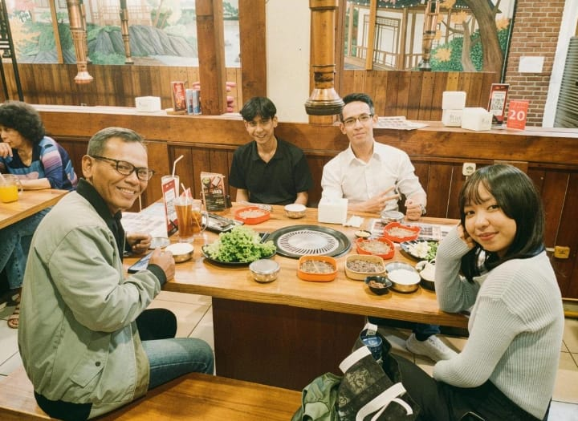
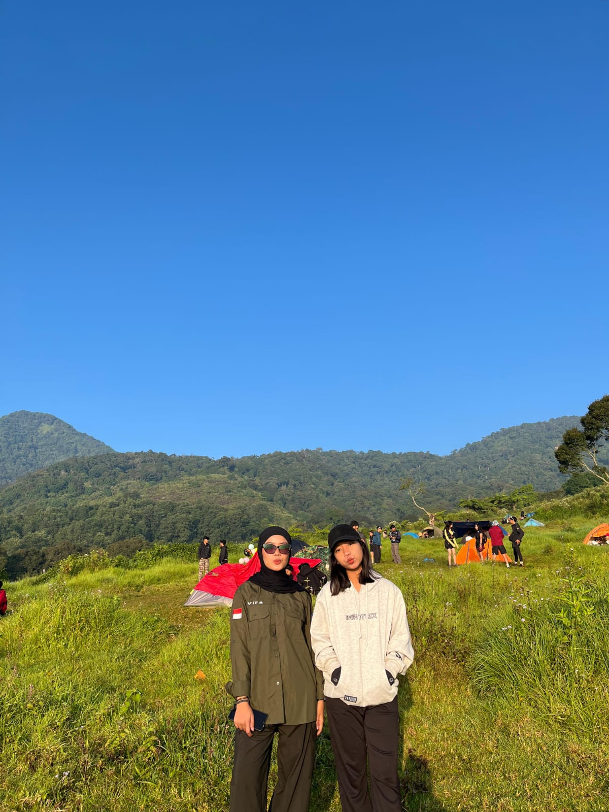
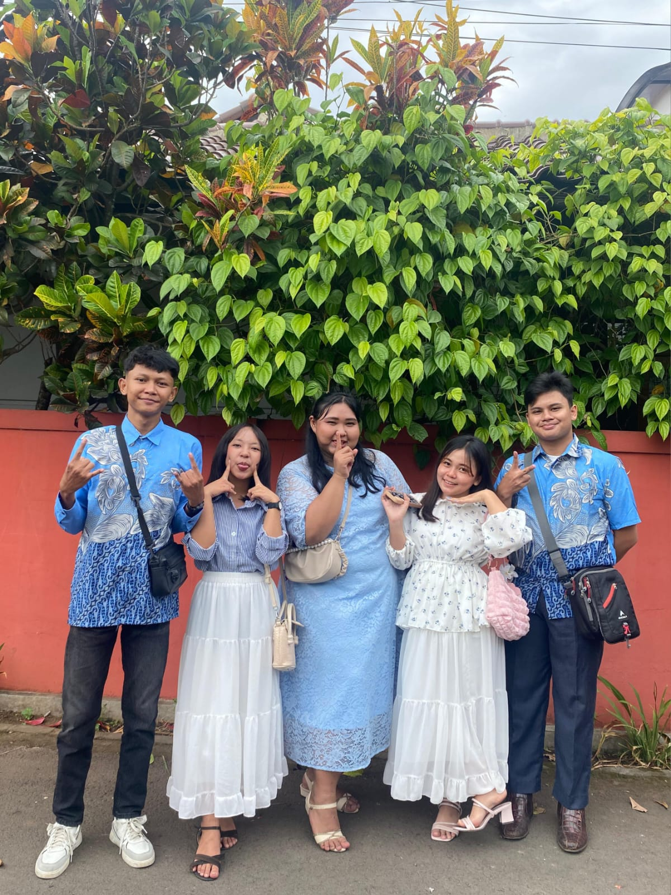
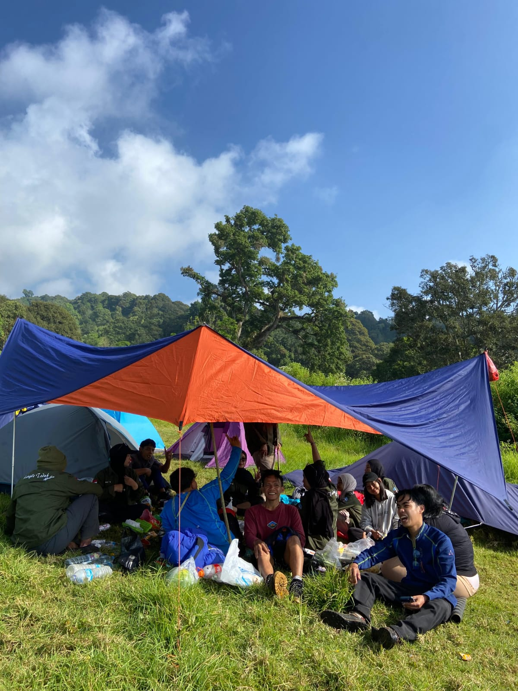

Pengalaman Liburan Saya
Selama liburan semester, saya menghabiskan waktu bersama keluarga dan teman-teman. Saya mengunjungi beberapa tempat, berkumpul bersama keluarga, dan menikmati berbagai kegiatan yang menyenangkan. Berikut adalah beberapa foto dan cerita dari pengalaman liburan saya.
Galeri Foto Liburan







Nama: Ellen Meysa Magdalena
NIM: 2582012
Tautan
Cerita Liburan Saya
Selama liburan semester tiga bulan ini, saya lebih banyak menghabiskan waktu bersama dengan keluarga. Saya berkumpul bersama papah saya, abang pertama, dan abang kedua. Salah satu kegiatan yang kami lakukan adalah pergi ke tempat makan yang berada di Bandung kota. Sesampainya di tempat makan, kami memesan makanan dan minuman yang kami sukai. Setelah itu, kami berbincang-bincang sambil menikmati hidangan yang telah kami pesan. Momen sederhana seperti ini yang membuat saya merasa senang karena bisa menghabiskan waktu bersama keluarga. Selain itu, liburan ini juga menjadi kesempatan bagi saya untuk beristirahat dari kegiatan kuliah dan dari tugas-tugas kuliah.
Selain berkumpul bersama keluarga, saya juga berkunjung ke rumah nenek di Jawa Tengah dan tinggal di sana hampir sebulan. Selama di rumah nenek, saya membantu pekerjaan rumah seperti menyapu, mengepel, dan mencuci piring. Namun, saya sempat sakit selama seminggu dan tidak kunjung sembuh, sehingga saya pergi ke puskesmas untuk melakukan pemeriksaan. Setelah hasil pemeriksaan keluar, saya harus menjalani rawat inap selama 4 hari. Pada tanggal 18 Agustus 2026, saya kembali ke Bandung dengan perjalanan sekitar tujuh jam dan tiba di Bandung pukul 17.00. Beberapa hari di Bandung, saya kembali sakit dan harus dibawa ke rumah sakit dan dirawat inap lagi selama 4 hari. Akibatnya, saya tidak bisa mengikuti kegiatan perkuliahan di minggu pertama. Semester ini, saya harap bisa lebih semangat lagi dan bisa mempersiapkan diri untuk semester 3.
Liburan ini memberikan saya banyak pengalaman yang berharga.
Saya sangat menikmati waktu bersama keluarga dan teman-teman.